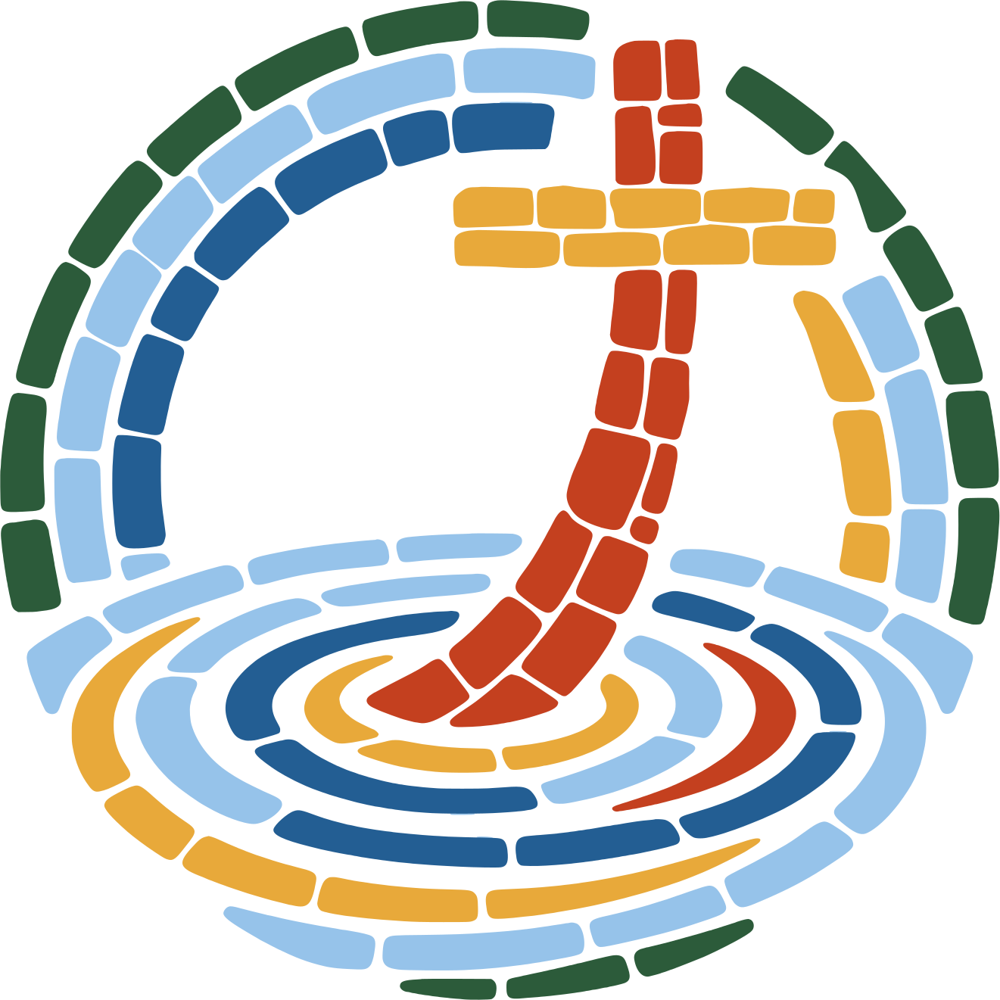
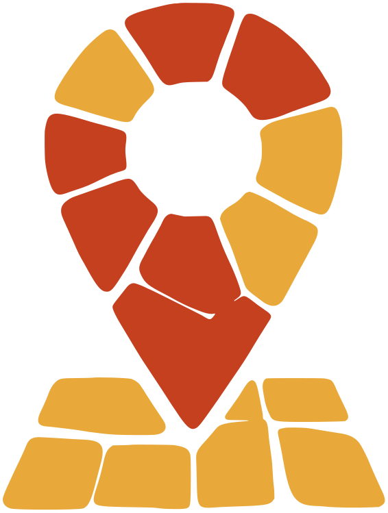
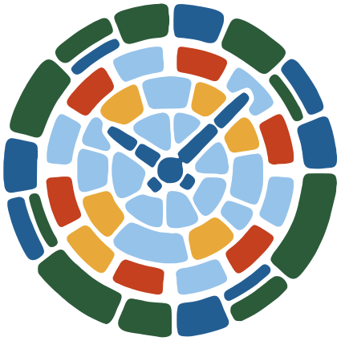
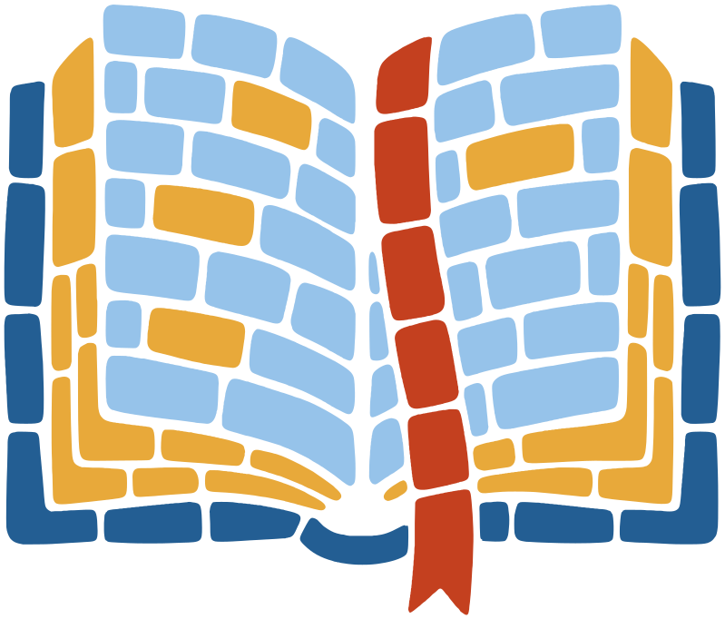
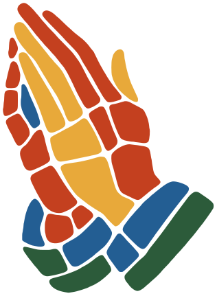

A small Southern Baptist church on Hamilton-Scipio Road. Here is a Sunday with us, one step at a time.


Step 1
Find us in Auburn
4241 Hamilton-Scipio Road, Hamilton, Ohio. Parking and which door to use go here once confirmed. Draft
Directions
Step 2
Come at a time that suits you
- 9:45 am Sunday School for all ages To confirm
- 11:00 am Sunday worship To confirm
- 6:00 pm Wednesday Bible study and prayer To confirm
Step 3
Someone will say hello
Come as you are and sit wherever you like; nobody will single you out. Draft

Step 4
We sing, pray and open the Bible
If you cannot make it, every message is streamed on Facebook and TikTok, and the latest is on our Watch page.
Watch the latest message
Step 5
Let us pray for you
Send a prayer request any time, and we will pray for you by name.
Send a prayer request